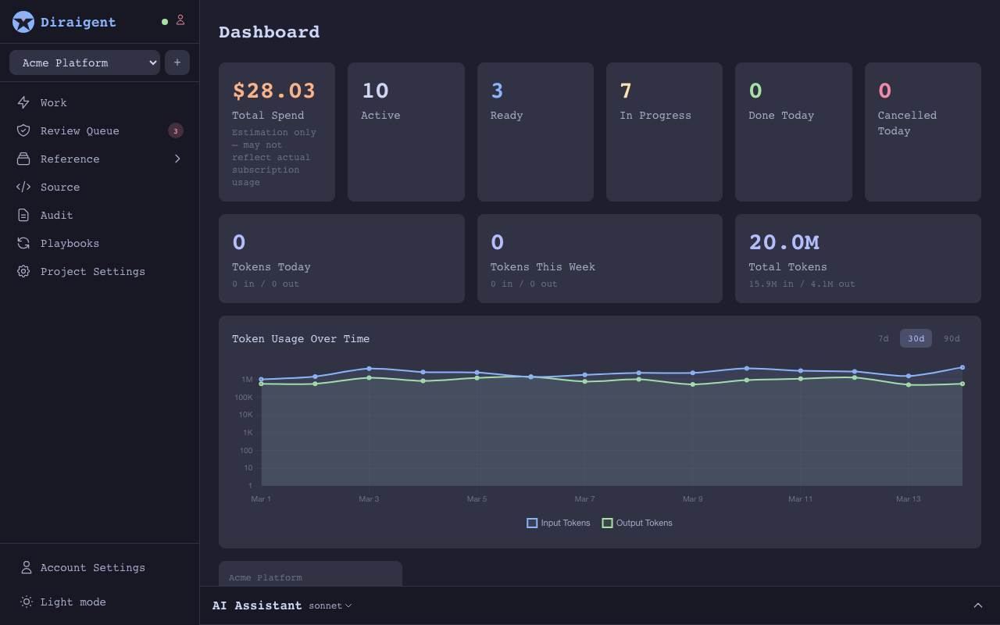
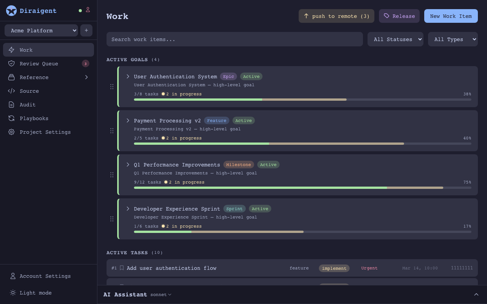
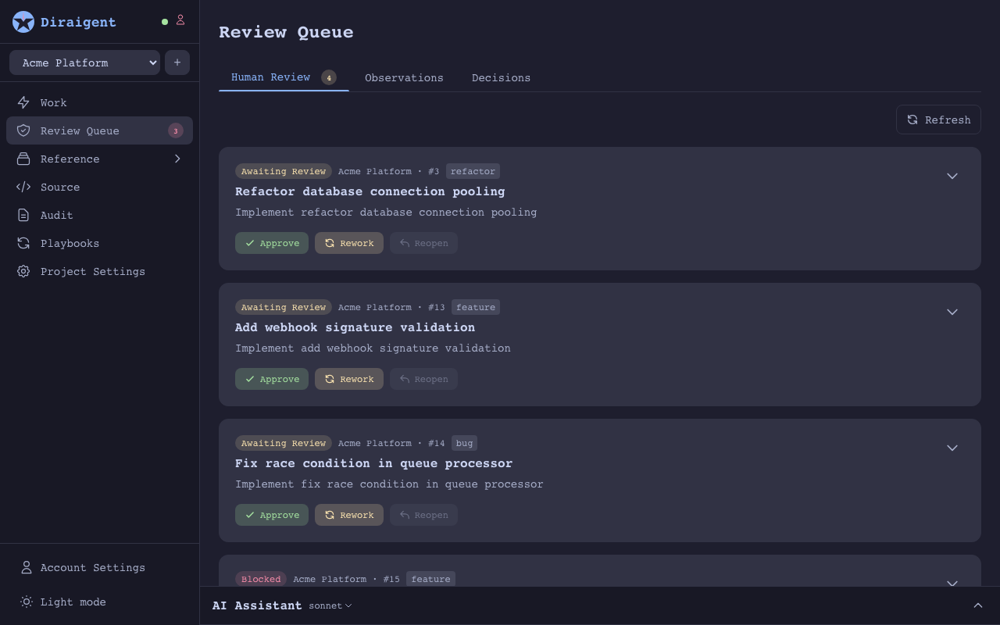
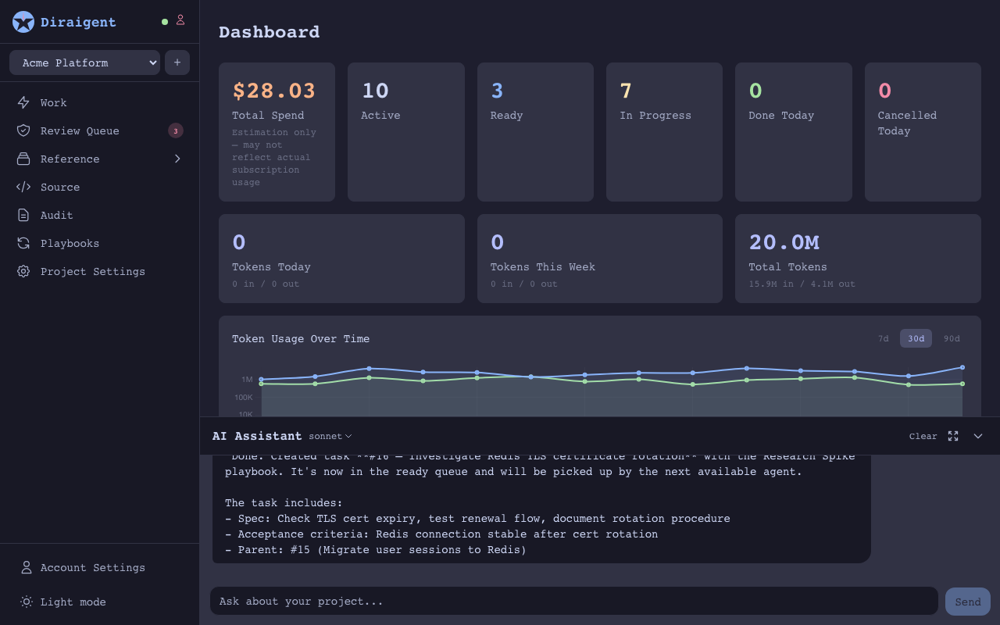

a self-hosted platform for AI-assisted software development. Plan work, run coding agents in isolated worktrees, and review results together from the web or iOS app.

Keep tasks, acceptance criteria, decisions and project knowledge together. Give each task the context needed to start work.
Use OpenCode by default, or configure Codex or Claude Code. Repository instructions and skills guide the selected agent.
Share projects with viewers, editors and managers. Review task results and give demo users read-only access.
Agents claim ready tasks, work in isolated Git worktrees, and report results. Use repository guidance and skills for the work, and request human review when needed. Orchestra coordinates execution and delivery.

Describe a goal and use project chat to plan concrete tasks with acceptance criteria. Track epics, features and milestones on the board, then make tasks ready for authorized workers.
Merge conflicts, ambiguous requirements, quality gate failures — these surface in a review queue for human decision. Approve, rework, or resolve with full context. Agents handle the routine; you handle the judgment calls.

Knowledge entries, architectural decisions, and observations accumulate as agents work. Keep relevant context available for later tasks, agents and sessions.

Define agent roles with scoped authority for execution, review and project management. Human project permissions are managed separately, with viewer, editor and manager access.
Choose a project Git delivery strategy for merging completed work or retaining branches. Release tools support merge strategies and tagging when you are ready to ship.
keep coordination central and detailed project content with your Orchestra.
The API owns sign-in, permissions and task coordination. PostgreSQL keeps shared state and references to content stored on the assigned worker.
Run Orchestra on a host or in a container. It manages repositories, task worktrees and execution. Enable full storage to keep detailed project content and content search on the worker.
Manage work and chat through the authenticated API. Project permissions apply to both clients; workspace and access management are available on the web.
Full storage requires the assigned Orchestra to be online for detailed reads. Persist its data directory and back it up together with the central database.
Describe what you want at any level: an epic, a feature, a bug fix. Attach acceptance criteria.
Use project chat to refine the work into tasks. Add acceptance criteria and make tasks ready when they can be executed.
Each task runs in its own git worktree. Multiple agents work in parallel with full logs and structured output.
Blockers, conflicts, and quality gate failures surface in your review queue. Approve, rework, or resolve.
Completed work merges through your configured strategy. Knowledge and decisions feed back into the project for the next cycle.
The Rust API coordinates shared state and authorized content access. Orchestra handles tools, repositories and task execution on its host.
Host Diraigent and its durable storage on your infrastructure. Your chosen AI provider and MCP tools determine where prompts and tool data are processed.
Use Docker Compose for the API and web app, and run Orchestra in a container or directly on a development machine with the tools your project needs.
run diraigent on your own infrastructure.
uses OpenCode by default, with Codex and Claude Code optional.
Orchestra runs the selected agent in an isolated git worktree for each task.
The legacy startup helper below requires macOS and Claude Code credentials in the Keychain. Configure OpenCode provider authentication separately; see the repository documentation for worker settings and durable storage.
curl -LO https://raw.githubusercontent.com/diraigent/diraigent/main/startup/docker-compose.yml
curl -LO https://raw.githubusercontent.com/diraigent/diraigent/main/startup/start.sh
curl -LO https://raw.githubusercontent.com/diraigent/diraigent/main/startup/.env.example
cp .env.example .env # edit .env for your setup
chmod +x start.sh
./start.sh # registers agent and starts everything
the orchestra pushes branches and merges results back to your remote.
for this to work, git must be able to authenticate inside the container —
mount a .netrc file, an ssh key, or configure a credential helper.
without credentials, agents work locally but push/merge to remote will fail.